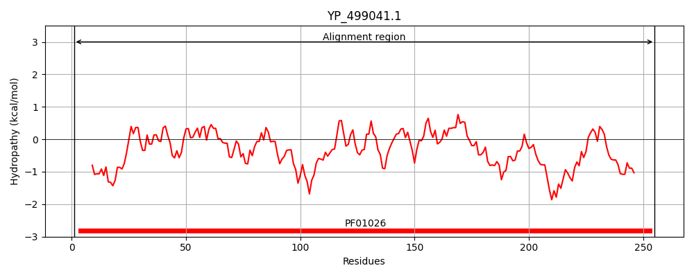
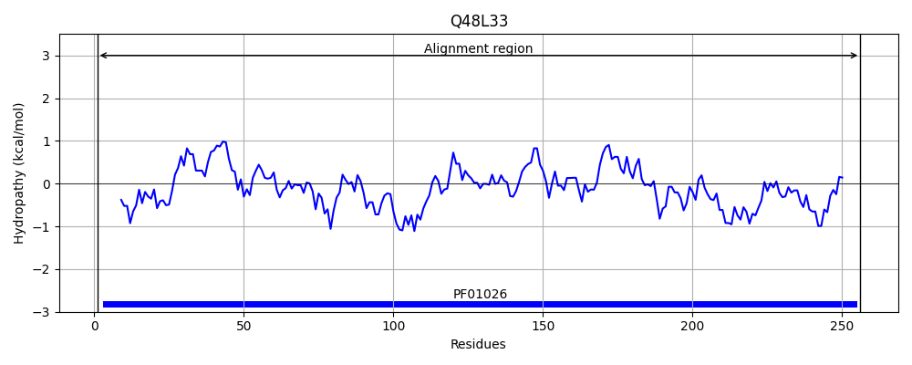
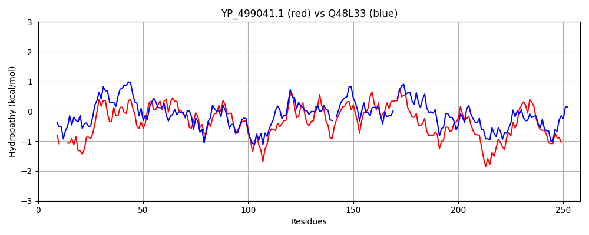

Hit Accession: Q48L33
Hit TCID: 3.A.16.1.5
Hit Description: gnl|BL_ORD_ID|13764 gnl|TC-DB|Q48L33|3.A.16.1.5 Hydrolase, TatD family OS=Pseudomonas savastanoi pv. phaseolicola (strain 1448A / Race 6) OX=264730 GN=PSPPH_1649 PE=4 SV=1
Mach Len: 258
e:0.000000
Query TMS Count : 0
Hit TMS Count: 0
TMS-Overlap Score: 0.000000
Predicted Substrates:CHEBI:14911;protein
BLAST Alignment:
Score: 442 , Bit scores: 174 bits, E-value: 5.1e-54, Alignment length: 258, Percentage identity: 39
Query: 1 MLIDTHVHLND---EQYDDDLSEVITRAREAGVDRMFVVGFNKSTIERAMKLIDEYDFLYGIIGWHPVDAIDFTEEHLEWIESLAQHPKVIGIGEMGLDYHWDKSPADVQKEVFRKQIALAKRLKLPIIIHNREATQDCIDILLEEHAEEVGGIMHSFSGSPEIADIVTNKLNFYISLGGPVTFKNAKQPKEVAKHVSMERLLVETDAPYLSPHPYRGKRNEPARVTLVAEQIAELKGLSYEEVCEQTTKNAEKLFNL 255
ML+D+H HL+ Q++ L + AR GV +G + L + Y + +G HP+D L+W+ HP+V+ IGE GLDYH++ A++Q+ FR + A P+IIH R A D + LL + A G++H F+ E+A + + +YISL G VTF+NA ++VA+ V +RLLVETD+PYL+P PYRGK N P V VAE +A L+G SYE EQTT N +LF L
Sbjct: 1 MLVDSHCHLDRLDLAQHNGSLDAALEAARGRGVGHFLCIGVSADNASAVKALAERYADVDCSVGIHPLDVKPGEMPPLDWLLKELDHPRVVAIGETGLDYHYEPEAAELQQASFRLHLEAASVTGKPVIIHTRGARADTLS-LLRDAALPQAGVLHCFTEDWEMARAALD-MGYYISLSGIVTFRNADALRDVARQVPADRLLVETDSPYLAPIPYRGKPNLPQYVREVAEFLAMLRGESYEHFAEQTTANFARLFPL 256 | Protein Hydropathy Plots: |
|---|
|  |  |
Pairwise Alignment-Hydropathy Plot:
|
|---|
|  |